Wedge-tailed eagle energy harvesting
Fitting behavioural bouts to landscape features - XGBoost
![]()
Here we use the behavioural states estimated by the classification methods to identify where and when wedge-tailed eagles ‘harvest’ environmental energy by soaring. As an alternative to the random forest (energy_harvesting_random_forest.qmd), we relate the soaring bouts (with flapping bouts as the negative samples) to the time of day, the day of the year and static landscape features such as topography, using gradient boosted trees (XGBoost). We use the same data, predictors and cross-validation folds as the random forest, so the two methods can be compared directly. The number of boosting rounds and the tree settings are chosen by day-blocked cross-validation with early stopping, and the model is interpreted with permutation importance, accumulated local effects and SHAP values (including SHAP interaction values, to look for interactions between the time and the landscape). We then map the relative suitability for soaring at different times of the day and year.
Load packages
Settings
All of the settings that might need changing are in this one chunk.
eagle_names- the eagles to model. This reads their bouts fromenergy_harvesting_data_prep.qmd(run that script for the same eagles first), and the outputs are saved in a separate folder for each set of eagles (e.g.xgboost_Tabatha_Stella). Run the random forest script for the same eagles first, so the two methods are compared for the same datamap_eagle- the eagle to show in the maps (the eagles can be far apart, so the maps only show one eagle at a time). The models are always fitted to all of the eagles ineagle_namesseed- the random seed. It is the same as in the random forest script, so that the random and day-blocked folds are the samelearning_rate,max_roundsandearly_stopping_rounds- how the number of boosting rounds is chosen (see the tuning section)n_threads- the number of CPU threads that XGBoost uses- the number of folds for each type of cross-validation, and the size of the spatial blocks (the same as in the random forest script, where these were chosen)
test_run- set toTRUEto run everything on a random 20% of the days, which is quicker when testing changes to the scriptout_dir- the folder for the model, predictions, tables and rasters made by this script, andrf_dir- the folder with the random forest outputs (for the comparison between the methods)
Show code
# the eagles to model
eagle_names <- c("Tabatha", "Stella")
# the eagle to show in the maps
map_eagle <- "Tabatha"
# random seed for the folds, permutations and models (the same as the random forest)
seed <- 2026
# local time zone (for the date and day of year)
local_tz <- "Australia/Hobart"
# XGBoost settings
learning_rate <- 0.05 # how much each new tree changes the predictions (eta)
max_rounds <- 3000 # the most boosting rounds (trees) to try
early_stopping_rounds <- 50 # stop when the held-out log loss hasn't improved in this many rounds
n_threads <- 4 # number of CPU threads
# number of folds for each cross-validation scheme
n_folds_random <- 10
n_folds_day <- 10
n_folds_spatial <- 5
# width of the square spatial blocks (m)
block_size_m <- 2000
# number of times each variable is shuffled for the permutation importance
n_permutations <- 5
# TRUE to only use a random 20% of the days (for testing changes to the script)
test_run <- FALSE
# folder for the outputs of this script, and the folder with the random forest
# outputs (one for each set of eagles)
out_dir <- paste0("outputs/xgboost_", paste(eagle_names, collapse = "_"))
rf_dir <- paste0("outputs/random_forest_", paste(eagle_names, collapse = "_"))
dir.create(out_dir, showWarnings = FALSE, recursive = TRUE)
# colours for each behaviour (the same as in the other scripts)
behaviour_colours <- c(soaring = "#E69F00", flapping = "#56B4E9")Import data from energy_harvesting_data_prep.qmd
The data preparation in this section is the same as in the random forest script - see that script for the map of the bouts, and the plots of the predictors and the correlations between them.
Each row is a soaring or flapping bout (at least 30 seconds of that behaviour, with a new bout starting after a gap of more than 60 seconds), with the values of the landscape variables at the start location of the bout. soaring is the response: 1 for a soaring bout and 0 for a flapping bout.
Show code
Time variables
We describe when each bout happened with two variables, both calculated at the start of the bout (the same point in time and place as the landscape variables).
Day fraction (day_fraction) - the time of day relative to sunrise and sunset: 0 is sunrise, 1 is sunset and 0.5 is (very close to) solar noon. Times before sunrise are negative and times after sunset are above 1. Scaling the time to the daylight period makes the same value comparable through the year (whereas 9 am is about 3 hours after sunrise in mid-summer, but only 1.5 hours in mid-winter). The sunrise and sunset times are calculated with suncalc for the local date and the start location of each bout.
Day of the year (yday) is circular, so we split it into its sine and cosine. yday_cos is roughly a summer (1) to winter (-1) axis, and yday_sin separates autumn (1) from spring (-1). When interpreting the model we treat them as one variable.
Show code
combined_bouts <- combined_bouts %>%
mutate(
# local date and day of the year
date_local = as_date(with_tz(start, local_tz)),
yday = yday(date_local),
# day of the year around a circle
yday_sin = sin(2 * pi * yday / 365.25),
yday_cos = cos(2 * pi * yday / 365.25)
)
# sunrise and sunset on the local date at the start location of each bout
# (getSunlightTimes returns one row for each row of data, in the same order)
bout_sun_times <- getSunlightTimes(data = data.frame(date = combined_bouts$date_local,
lat = combined_bouts$lat,
lon = combined_bouts$lon),
keep = c("sunrise", "sunset"), tz = "UTC")
# check that the rows are in the same order (should be TRUE)
all(bout_sun_times$date == combined_bouts$date_local & bout_sun_times$lat == combined_bouts$lat)[1] TRUEShow code
combined_bouts <- combined_bouts %>%
mutate(sunrise = bout_sun_times$sunrise,
sunset = bout_sun_times$sunset,
# time since sunrise as a fraction of the time from sunrise to sunset
# (0 = sunrise, 1 = sunset, negative before sunrise, above 1 after sunset)
day_fraction = as.numeric(difftime(start, sunrise, units = "secs")) /
as.numeric(difftime(sunset, sunrise, units = "secs")))
# the range of day fractions
summary(combined_bouts$day_fraction) Min. 1st Qu. Median Mean 3rd Qu. Max.
-0.0437 0.3976 0.5180 0.5220 0.6412 1.0519 Predictor variables
The predictors are the same as for the random forest - the time variables and the topographic variables at the start location of each bout. As for the random forest, we never use variables that describe the movement itself (bout duration, altitude gained, vertical rate, flight height), the eagle’s name, the coordinates or the clock time (see the random forest script for why).
We also define the same groups of related predictors as for the random forest, which are used for the grouped importance (slope and ruggedness are highly correlated, and the sine and cosine of the day of year only make sense together).
Show code
# the variables used in the models, in groups
time_vars <- c("day_fraction", "yday_sin", "yday_cos")
landscape_vars <- c("elevation", "tpi_300m", "slope", "ruggedness", "northness", "eastness")
predictors <- c(time_vars, landscape_vars)
# labels for the plots
variable_labels <- c(day_fraction = "Day fraction (0 = sunrise, 1 = sunset)",
yday_sin = "Day of year (sine)",
yday_cos = "Day of year (cosine)",
elevation = "Elevation (m)",
tpi_300m = "Topographic position index (300 m)",
slope = "Slope (degrees)",
ruggedness = "Ruggedness",
northness = "Northness",
eastness = "Eastness")
# groups of related predictors
predictor_groups <- list(elevation_position = c("elevation", "tpi_300m"),
steepness = c("slope", "ruggedness"),
aspect = c("northness", "eastness"),
time_of_day = "day_fraction",
season = c("yday_sin", "yday_cos"))
group_labels <- c(elevation_position = "Elevation & topographic position",
steepness = "Slope & ruggedness",
aspect = "Aspect (northness & eastness)",
time_of_day = "Time of day (day fraction)",
season = "Day of year (sine & cosine)")Missing values
Unlike ranger, XGBoost can use rows with missing values - at each split, it learns which branch the missing values should go down. However, here the missing values are mostly over the sea (where the rasters are NA), which isn’t ‘unknown’ terrain but a different surface altogether, and the random forest couldn’t use these bouts. We therefore remove them, so that the two methods are fitted to exactly the same bouts.
Show code
# why each bout has missing values (if it does)
combined_bouts %>%
mutate(missing = case_when(is.na(elevation) ~ "over the sea (no elevation)",
if_any(all_of(predictors), is.na) ~ "on the coast (no slope, ruggedness or aspect)",
TRUE ~ "no missing values")) %>%
count(missing, behaviour) %>%
pivot_wider(names_from = behaviour, values_from = n)Show code
# the data for the models - the bouts with all of the predictors, with the
# behaviour as a factor (flapping first, so that soaring is the 'event')
model_data <- combined_bouts %>%
drop_na(all_of(predictors)) %>%
mutate(behaviour = factor(behaviour, levels = c("flapping", "soaring")))
# use a random 20% of the days when testing changes to the script
if (test_run) {
set.seed(seed)
test_days <- sample(unique(model_data$date_local),
size = round(0.2 * n_distinct(model_data$date_local)))
model_data <- model_data %>% filter(date_local %in% test_days)
}
# number of bouts of each behaviour used in the models
model_data %>% count(behaviour) %>% mutate(proportion = n / sum(n))Spatial layers
The spatial layers are only used for the prediction maps at the end of the script. They are cropped to the area around the bouts of map_eagle (plus a buffer), in the same way as in the random forest script.
Show code
# (terra rasters can't be saved in the knitr cache, so this chunk is always run)
# the spatial layers to crop
raster_files <- c(elevation = "mapping/HS_DEM.tif",
tpi_300m = "mapping/TPI_300m.tif",
slope = "mapping/HS_Slope.tif",
ruggedness = "mapping/HS_Ruggedness.tif",
aspect = "mapping/Aspect_degrees.tif")
# the bouts of the eagle to map
map_eagle_bouts <- combined_bouts %>% filter(name == map_eagle)
# the area to crop to - the extent of the bouts plus a buffer (m)
buffer_m <- 2000
crop_area <- ext(min(map_eagle_bouts$utme) - buffer_m,
max(map_eagle_bouts$utme) + buffer_m,
min(map_eagle_bouts$utmn) - buffer_m,
max(map_eagle_bouts$utmn) + buffer_m) %>%
# the eagle locations are in GDA94 / MGA zone 55
vect(crs = "EPSG:28355")
# read in and crop each raster (the crop area is projected to the crs of each
# raster, in case some are in a different crs)
spatial_layers <- map(raster_files, \(f) {
r <- rast(f)
crop(r, project(crop_area, crs(r)))
})Validation design
We use the same cross-validation schemes as for the random forest (see that script for why random splits are misleading for these data):
- Day-blocked cross-validation - all of the bouts from the same date are in the same fold, which tests prediction to new days
- Spatial block cross-validation - 2 km square blocks are assigned to folds, which tests prediction to new places (Valavi et al. 2019)
- Random 10-fold cross-validation - only as a reference for how optimistic (or otherwise misleading) a random split is
- Leave-one-bird-out cross-validation - only when there is more than one eagle in the data
The folds are made with exactly the same code and seed as in the random forest script, so each bout is in the same fold for both methods. This means that the two methods are tested on exactly the same held-out data, and can be compared fold by fold.
Show code
set.seed(seed)
# random folds - each bout is assigned to a fold at random
model_data <- model_data %>%
mutate(fold_random = sample(rep(1:n_folds_random, length.out = n())))
# day folds - each date is assigned to a fold at random, and every bout on that
# date gets the same fold
day_folds <- model_data %>%
distinct(date_local) %>%
mutate(fold_day = sample(rep(1:n_folds_day, length.out = n())))
model_data <- model_data %>% left_join(day_folds, by = "date_local")
# bird folds - one fold for each eagle (only when there is more than one eagle)
if (n_distinct(model_data$name) > 1) {
model_data <- model_data %>% mutate(fold_bird = as.integer(factor(name)))
}
# spatial folds - square blocks assigned to folds at random (of 100 random
# assignments, cv_spatial keeps the one with the most even folds)
bouts_sf <- st_as_sf(model_data, coords = c("utme", "utmn"), crs = "EPSG:28355", remove = FALSE)
spatial_cv <- cv_spatial(x = bouts_sf, column = "soaring",
size = block_size_m, k = n_folds_spatial,
hexagon = FALSE, selection = "random", iteration = 100,
seed = seed, biomod2 = FALSE,
progress = FALSE, report = FALSE, plot = FALSE)
model_data$fold_spatial <- spatial_cv$folds_ids
# the cross-validation schemes, and the column with the folds for each
cv_schemes <- c(random = "fold_random", day = "fold_day", spatial = "fold_spatial")
if ("fold_bird" %in% names(model_data)) cv_schemes <- c(cv_schemes, bird = "fold_bird")
cv_scheme_labels <- c(random = "Random 10-fold (reference only)",
day = "Day-blocked",
spatial = "Spatial blocks",
bird = "Leave-one-bird-out")
# number of bouts and proportion of soaring bouts in each fold
model_data %>%
pivot_longer(all_of(unname(cv_schemes)), names_to = "scheme", values_to = "fold") %>%
group_by(scheme, fold) %>%
summarise(n_bouts = n(),
prop_soaring = round(mean(soaring), 2),
.groups = "drop") %>%
pivot_wider(names_from = scheme, values_from = c(n_bouts, prop_soaring))Check that the folds match the random forest
If the random forest script has been run, we check that each bout is in the same fold as in the random forest’s out-of-fold predictions. The number of bouts in a different fold should be 0. This check (and the comparison with the random forest below) is skipped when test_run is TRUE, as the folds are then made on the subset of days, so they won’t match.
Show code
rf_oof_file <- file.path(rf_dir, "rf_oof_predictions.csv")
if (file.exists(rf_oof_file) && !test_run) {
rf_folds <- read_csv(rf_oof_file, show_col_types = FALSE) %>%
filter(model == "full") %>%
select(bout_id, scheme, rf_fold = fold)
model_data %>%
select(bout_id, all_of(unname(cv_schemes))) %>%
pivot_longer(-bout_id, names_to = "scheme", values_to = "fold") %>%
mutate(scheme = str_remove(scheme, "fold_")) %>%
inner_join(rf_folds, by = c("bout_id", "scheme")) %>%
group_by(scheme) %>%
summarise(n_bouts_compared = n(),
n_in_a_different_fold = sum(fold != rf_fold))
} else {
"The random forest outputs weren't found (or this is a test run), so the folds can't be compared"
}XGBoost models
How XGBoost differs from a random forest
Both methods combine many decision trees, but in different ways:
- A random forest grows many deep trees independently, each on a random sample of the data, and averages them. Adding more trees doesn’t over-fit - the average just becomes more stable.
- Gradient boosting (XGBoost, Chen and Guestrin (2016)) grows shallow trees one after another. Each new tree is fitted to the errors of the model so far (the gradient of the log loss), and its predictions are shrunk by the learning rate before being added on. The model is built up on the log-odds scale, so the predicted probability of soaring is the logistic transform of the sum of the trees. Because each tree corrects the previous ones, adding too many trees does over-fit, so the number of boosting rounds has to be chosen with held-out data.
The main XGBoost settings are:
learning_rate(eta) - how much each tree contributes. Smaller values need more rounds but usually give better predictions. We fix it at 0.05, and choose the number of rounds with early stopping.nrounds- the number of boosting rounds (trees). We use early stopping - the model keeps adding trees until the log loss of the held-out folds hasn’t improved for 50 rounds, and the best number of rounds is kept.max_depth- the depth of each tree. This sets the highest order of interaction a single tree can fit (a depth of 2 allows two-way interactions, such as slope × time of day).min_child_weight- the smallest ‘weight’ (for a binary response, the sum of p × (1 - p) of the bouts) in a terminal node. Larger values stop the trees fitting small groups of bouts. With probabilities near 0.5, a weight of 10 is roughly 40 bouts.subsample- the proportion of the bouts used to grow each tree (like the random forest’s sample fraction)colsample_bynode- the proportion of the predictors that each split can choose from (like the random forest’smtry). We fix it at 0.8.
We use the log loss (the negative log-likelihood of the observed behaviour under the predicted probabilities) for early stopping and to choose between settings, as this is what XGBoost minimises and it rewards well-calibrated probabilities. We also report the AUC.
Helper functions
As for the random forest, three small functions make sure that every model is fitted, predicted and evaluated in the same way. cv_metrics() is the same as in the random forest script.
Show code
# the XGBoost parameters, from one row of the tuning grid
xgb_settings <- function(p) {
xgb.params(objective = "binary:logistic",
# the last metric is used for early stopping
eval_metric = c("auc", "logloss"),
learning_rate = learning_rate,
max_depth = p$max_depth,
min_child_weight = p$min_child_weight,
subsample = p$subsample,
colsample_bynode = 0.8,
nthread = n_threads,
seed = seed)
}
# fit an XGBoost model of soaring (1) vs flapping (0), using the variables in vars
fit_xgb <- function(data, vars, params, nrounds) {
train_matrix <- xgb.DMatrix(as.matrix(data[vars]), label = data$soaring, nthread = n_threads)
xgb.train(params = xgb_settings(params), data = train_matrix, nrounds = nrounds, verbose = 0)
}
# predicted probability of soaring (XGBoost needs exactly the columns it was
# trained with, in the same order, so we select them by name)
predict_soaring <- function(model, newdata) {
predict(model, as.matrix(newdata[variable.names(model)]))
}
# AUC, TSS (with the sensitivity, specificity and threshold) and Brier score
cv_metrics <- function(observed, predicted) {
roc_curve <- pROC::roc(response = observed, predictor = predicted,
levels = c(0, 1), direction = "<", quiet = TRUE)
# the threshold that maximises sensitivity + specificity - 1 (i.e. TSS)
best <- pROC::coords(roc_curve, x = "best", best.method = "youden",
ret = c("threshold", "sensitivity", "specificity"),
transpose = FALSE)[1, ]
tibble(AUC = as.numeric(pROC::auc(roc_curve)),
TSS = best$sensitivity + best$specificity - 1,
sensitivity = best$sensitivity,
specificity = best$specificity,
threshold = best$threshold,
Brier = mean((predicted - observed)^2))
}Tuning the tree settings and the number of rounds
For every combination of settings in tuning_grid, we run xgb.cv with the day-blocked folds. For each combination, early stopping finds the number of rounds with the lowest held-out log loss, and we keep the combination with the lowest log loss overall.
As for the random forest, the tuning isn’t repeated inside each fold of each cross-validation scheme (nested cross-validation), so the cross-validated metrics below are slightly optimistic. Here this also applies to the number of rounds, which is chosen with the same day folds that are used to test the models. The spatial cross-validation uses the same settings, so it isn’t affected in the same way.
Show code
tuning_grid <- expand_grid(max_depth = c(2, 3, 4, 6),
min_child_weight = c(1, 10, 50),
subsample = c(0.5, 0.8))
# the held-out bouts (row numbers) of each day fold, for xgb.cv
day_fold_rows <- map(sort(unique(model_data$fold_day)), \(k) which(model_data$fold_day == k))
# all of the bouts as an XGBoost data matrix
all_bouts_matrix <- xgb.DMatrix(as.matrix(model_data[predictors]), label = model_data$soaring,
nthread = n_threads)
start_time <- Sys.time()
tuning_results <- list()
tuning_logs <- list()
for (i in 1:nrow(tuning_grid)) {
cv <- xgb.cv(params = xgb_settings(tuning_grid[i, ]),
data = all_bouts_matrix,
nrounds = max_rounds,
folds = day_fold_rows,
early_stopping_rounds = early_stopping_rounds,
verbose = 0)
# the held-out metrics at the best number of rounds
best_round <- cv$early_stop$best_iteration
best_log <- cv$evaluation_log[best_round, ]
tuning_results[[i]] <- bind_cols(tuning_grid[i, ],
nrounds = best_round,
test_logloss = best_log$test_logloss_mean,
test_auc = best_log$test_auc_mean,
train_auc = best_log$train_auc_mean)
# the metrics at every round (for the learning curves)
tuning_logs[[i]] <- as_tibble(cv$evaluation_log) %>% mutate(setting = i)
}
tuning_results <- bind_rows(tuning_results) %>%
mutate(setting = row_number()) %>%
arrange(test_logloss)
# time taken to tune
Sys.time() - start_timeTime difference of 2.283787 minsShow code
Learning curves
The training and held-out (day-blocked) log loss and AUC at each boosting round, for the best settings. The shaded bands are ± 1 standard deviation across the folds, and the dashed line is the number of rounds chosen by early stopping.
The training performance keeps improving as more trees are added, but the held-out performance levels off and then gets worse - the gap between them is the over-fitting. Early stopping picks the number of rounds where the held-out log loss is lowest.
Show code
best_setting <- tuning_results$setting[1]
tuning_logs[[best_setting]] %>%
pivot_longer(-c(iter, setting), names_to = c("data", "metric", ".value"),
names_pattern = "(train|test)_(auc|logloss)_(mean|std)") %>%
mutate(data = if_else(data == "train", "Training folds", "Held-out folds (day-blocked)"),
metric = if_else(metric == "auc", "AUC", "Log loss")) %>%
ggplot(aes(x = iter, y = mean, colour = data, fill = data)) +
geom_ribbon(aes(ymin = mean - std, ymax = mean + std), alpha = 0.2, colour = NA) +
geom_line() +
geom_vline(xintercept = tuning_results$nrounds[1], linetype = "dashed") +
facet_wrap(~ metric, scales = "free_y") +
scale_colour_manual(values = c("#0072B2", "#D55E00")) +
scale_fill_manual(values = c("#0072B2", "#D55E00")) +
labs(x = "Boosting round (number of trees)", y = NULL, colour = NULL, fill = NULL) +
theme_bw() +
theme(legend.position = "bottom")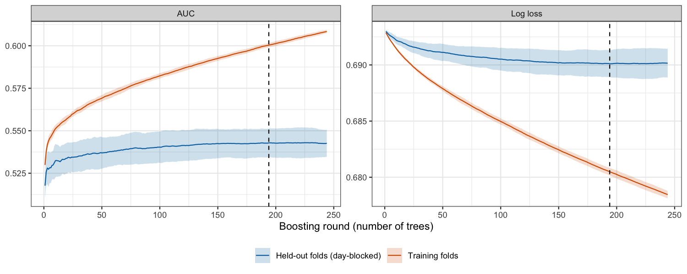
Number of rounds for each model
As for the random forest, we compare four models: null (the proportion of soaring bouts in the training data), time (only the time of day and day of year), landscape (only the topographic variables) and full (both). Unlike the random forest, the best number of rounds depends a lot on how much signal there is in the predictors, so we use early stopping (with the day folds and the best tree settings) to choose the number of rounds separately for each model.
Show code
# the variables in each model
model_sets <- list(time = time_vars,
landscape = landscape_vars,
full = predictors)
model_nrounds <- map_dbl(model_sets, \(vars) {
model_matrix <- xgb.DMatrix(as.matrix(model_data[vars]), label = model_data$soaring,
nthread = n_threads)
cv <- xgb.cv(params = xgb_settings(best_params),
data = model_matrix,
nrounds = max_rounds,
folds = day_fold_rows,
early_stopping_rounds = early_stopping_rounds,
verbose = 0)
cv$early_stop$best_iteration
})
model_nrounds time landscape full
43 140 194 Cross-validation of the four models
Each model is fitted to the training folds and predicts the held-out fold, for each cross-validation scheme. We keep the full model fitted in each day, spatial and bird fold, for the permutation importance and the uncertainty in the prediction maps.
Show code
start_time <- Sys.time()
oof_predictions <- list()
fold_models <- list()
for (scheme in names(cv_schemes)) {
fold_col <- cv_schemes[[scheme]]
fold_models[[scheme]] <- list()
for (k in sort(unique(model_data[[fold_col]]))) {
train <- model_data %>% filter(.data[[fold_col]] != k)
test <- model_data %>% filter(.data[[fold_col]] == k)
# the null model predicts the proportion of soaring bouts in the training data
predictions <- tibble(bout_id = test$bout_id,
scheme = scheme,
fold = k,
soaring = test$soaring,
null = mean(train$soaring))
# fit and predict each of the XGBoost models
for (m in names(model_sets)) {
fit <- fit_xgb(train, model_sets[[m]], best_params, model_nrounds[[m]])
predictions[[m]] <- predict_soaring(fit, test)
# keep the full models (not for the random folds, which aren't used below)
if (m == "full" && scheme != "random") fold_models[[scheme]][[as.character(k)]] <- fit
}
oof_predictions[[paste(scheme, k)]] <- predictions
}
}
# one row for each bout, scheme and model
oof_predictions <- bind_rows(oof_predictions) %>%
pivot_longer(c(null, time, landscape, full), names_to = "model", values_to = "prob") %>%
mutate(model = factor(model, levels = c("null", "time", "landscape", "full")))
# time taken for the cross-validation
Sys.time() - start_timeTime difference of 6.468313 secsResults
The metrics are calculated from the out-of-fold predictions of all of the bouts pooled together, along with the mean and standard deviation of the AUC across the folds. The day-blocked, spatial block and leave-one-bird-out results are the ones to use.
As for the random forest, the AUC can be below 0.5. For the null model this is an artefact of pooling the folds (its AUC within each fold is exactly 0.5). For the time-only model under the random and spatial folds, it is most likely because soaring and flapping bouts alternate within flights, so the bouts closest in time to a held-out bout (which are in the training data) are often the other behaviour - see the random forest script for more detail.
Show code
# metrics from the pooled out-of-fold predictions
cv_results <- oof_predictions %>%
group_by(scheme, model) %>%
summarise(cv_metrics(soaring, prob), .groups = "drop")
# the AUC in each fold
fold_auc <- oof_predictions %>%
group_by(scheme, model, fold) %>%
summarise(AUC = as.numeric(pROC::auc(soaring, prob, levels = c(0, 1),
direction = "<", quiet = TRUE)),
.groups = "drop")
cv_results <- cv_results %>%
left_join(fold_auc %>%
group_by(scheme, model) %>%
summarise(AUC_fold_mean = mean(AUC), AUC_fold_sd = sd(AUC), .groups = "drop"),
by = c("scheme", "model")) %>%
mutate(scheme = factor(scheme, levels = names(cv_scheme_labels))) %>%
arrange(scheme, model)
cv_results %>%
mutate(scheme = cv_scheme_labels[as.character(scheme)],
across(where(is.numeric), \(x) round(x, 3)))The AUC of each fold, for each model and cross-validation scheme. Each point is one fold.
Show code
fold_auc %>%
mutate(scheme = factor(cv_scheme_labels[scheme], levels = cv_scheme_labels)) %>%
ggplot(aes(x = model, y = AUC)) +
geom_hline(yintercept = 0.5, linetype = "dashed", colour = "grey50") +
geom_boxplot(outlier.shape = NA, colour = "grey60") +
geom_jitter(width = 0.1, height = 0, size = 1.5, alpha = 0.7) +
facet_wrap(~ scheme, nrow = 1) +
labs(x = "Model", y = "AUC of each fold") +
theme_bw()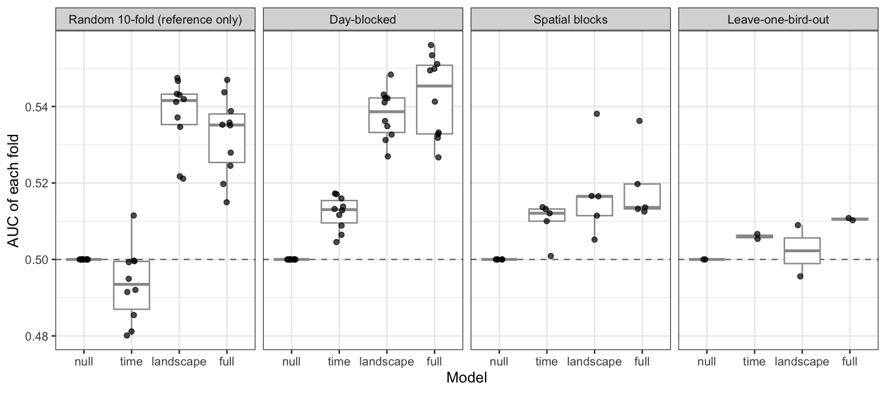
Calibration
The observed proportion of soaring bouts against the mean predicted probability of soaring, for the out-of-fold predictions of the full model in bins of width 0.1. A well-calibrated model is on the dashed 1:1 line. Boosted trees are fitted by minimising the log loss, so they are usually well calibrated when the number of rounds is chosen by early stopping.
Show code
oof_predictions %>%
filter(model == "full") %>%
mutate(bin = cut(prob, breaks = seq(0, 1, by = 0.1), include.lowest = TRUE)) %>%
group_by(scheme, bin) %>%
summarise(mean_predicted = mean(prob),
observed = mean(soaring),
n_bouts = n(),
.groups = "drop") %>%
mutate(scheme = factor(cv_scheme_labels[scheme], levels = cv_scheme_labels)) %>%
ggplot(aes(x = mean_predicted, y = observed)) +
geom_abline(intercept = 0, slope = 1, linetype = "dashed", colour = "grey50") +
geom_line() +
geom_point(aes(size = n_bouts)) +
facet_wrap(~ scheme, nrow = 1) +
coord_equal(xlim = c(0, 1), ylim = c(0, 1)) +
labs(x = "Mean predicted probability of soaring", y = "Observed proportion of soaring bouts",
size = "Number\nof bouts") +
theme_bw()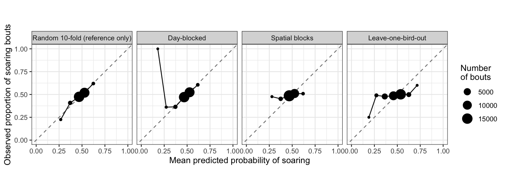
Comparison with the random forest
Because the two methods were tested on exactly the same folds, we can compare them directly - both overall, and fold by fold. In the plot, each point is one fold of the full model, and points above the 1:1 line are folds where XGBoost had a higher AUC than the random forest.
Show code
rf_results_file <- file.path(rf_dir, "rf_cv_results.csv")
if (file.exists(rf_results_file) && file.exists(rf_oof_file) && !test_run) {
rf_cv_results <- read_csv(rf_results_file, show_col_types = FALSE)
# the pooled AUC and Brier score of each method, side by side
bind_rows(`Random forest` = rf_cv_results,
XGBoost = cv_results %>% mutate(across(c(scheme, model), as.character)),
.id = "method") %>%
select(method, scheme, model, AUC, Brier) %>%
pivot_wider(names_from = method, values_from = c(AUC, Brier)) %>%
mutate(scheme = factor(scheme, levels = names(cv_scheme_labels)),
model = factor(model, levels = c("null", "time", "landscape", "full"))) %>%
arrange(scheme, model) %>%
mutate(scheme = cv_scheme_labels[as.character(scheme)],
across(where(is.numeric), \(x) round(x, 3))) %>%
print()
# the AUC of each fold of the random forest
rf_fold_auc <- read_csv(rf_oof_file, show_col_types = FALSE) %>%
group_by(scheme, model, fold) %>%
summarise(AUC_rf = as.numeric(pROC::auc(soaring, prob, levels = c(0, 1),
direction = "<", quiet = TRUE)),
.groups = "drop")
p <- fold_auc %>%
mutate(model = as.character(model)) %>%
inner_join(rf_fold_auc, by = c("scheme", "model", "fold")) %>%
filter(model == "full") %>%
mutate(scheme = factor(cv_scheme_labels[scheme], levels = cv_scheme_labels)) %>%
ggplot(aes(x = AUC_rf, y = AUC)) +
geom_abline(intercept = 0, slope = 1, linetype = "dashed", colour = "grey50") +
geom_point(size = 2, alpha = 0.7) +
facet_wrap(~ scheme, nrow = 1) +
coord_equal() +
labs(x = "AUC of the random forest (full model)", y = "AUC of XGBoost (full model)") +
theme_bw()
print(p)
} else {
"The random forest outputs weren't found (or this is a test run), so the methods can't be compared"
}# A tibble: 16 × 6
scheme model `AUC_Random forest` AUC_XGBoost `Brier_Random forest`
<chr> <fct> <dbl> <dbl> <dbl>
1 Random 10-fold (… null 0.491 0.491 0.25
2 Random 10-fold (… time 0.39 0.493 0.259
3 Random 10-fold (… land… 0.535 0.537 0.25
4 Random 10-fold (… full 0.511 0.532 0.251
5 Day-blocked null 0.493 0.493 0.25
6 Day-blocked time 0.506 0.511 0.251
7 Day-blocked land… 0.54 0.537 0.249
8 Day-blocked full 0.542 0.542 0.249
9 Spatial blocks null 0.49 0.49 0.25
10 Spatial blocks time 0.488 0.507 0.252
11 Spatial blocks land… 0.52 0.52 0.251
12 Spatial blocks full 0.513 0.521 0.251
13 Leave-one-bird-o… null 0.494 0.494 0.25
14 Leave-one-bird-o… time 0.504 0.504 0.252
15 Leave-one-bird-o… land… 0.502 0.507 0.252
16 Leave-one-bird-o… full 0.507 0.512 0.252
# ℹ 1 more variable: Brier_XGBoost <dbl>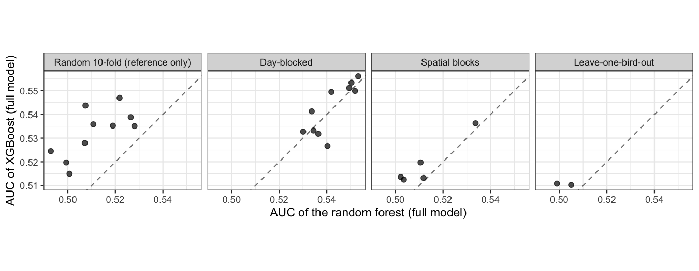
Final model
The final model is fitted to all of the bouts, with the tuned settings and the number of rounds chosen for the full model. This is the model used for the SHAP values, effect plots and prediction maps below.
Interpretation
XGBoost’s built-in importance
XGBoost reports three measures of importance for each variable, all calculated from the trees of the final model (i.e. the training data):
- Gain - the total improvement in the log loss from the splits on that variable (the most commonly used)
- Cover - the number of bouts (weighted) affected by the splits on that variable
- Frequency - the proportion of all splits that are on that variable
These are shown for reference only. They measure how much the model used each variable to fit the training data, not how much each variable helps to predict new data, and they share out the credit between correlated variables (such as slope and ruggedness) fairly arbitrarily. Gain also favours continuous variables with many possible split points. We therefore use the permutation importance and the SHAP values below as the main results.
Show code
xgb.importance(model = final_model) %>%
as_tibble() %>%
pivot_longer(c(Gain, Cover, Frequency), names_to = "measure", values_to = "importance") %>%
mutate(label = variable_labels[Feature],
measure = factor(measure, levels = c("Gain", "Cover", "Frequency"))) %>%
ggplot(aes(x = importance, y = reorder(label, importance))) +
geom_col(fill = "grey50") +
facet_wrap(~ measure, scales = "free_x") +
labs(x = "Proportion of the total", y = NULL) +
theme_bw()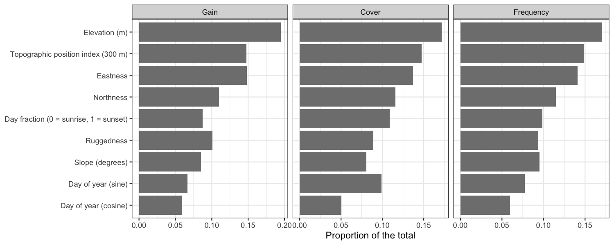
Permutation importance
The same as for the random forest - for each full model from the day-blocked, spatial and leave-one-bird-out cross-validation folds, we shuffle one variable (or group of variables) in the held-out bouts, and measure how much the AUC drops. Shuffling a group of variables together is preferred when the variables are correlated (see the random forest script for why).
Show code
# each variable on its own, and each group of variables
importance_sets <- c(set_names(as.list(predictors)), predictor_groups)
importance_types <- c(rep("Single variable", length(predictors)),
rep("Group of variables", length(predictor_groups)))
names(importance_types) <- names(importance_sets)
# AUC from the observed behaviour and predicted probability
auc_value <- function(observed, predicted) {
as.numeric(pROC::auc(observed, predicted, levels = c(0, 1), direction = "<", quiet = TRUE))
}
set.seed(seed)
start_time <- Sys.time()
importance_results <- list()
for (scheme in names(fold_models)) {
fold_col <- cv_schemes[[scheme]]
for (k in names(fold_models[[scheme]])) {
fit <- fold_models[[scheme]][[k]]
test <- model_data %>% filter(.data[[fold_col]] == as.numeric(k))
# AUC of the held-out bouts before shuffling
auc_original <- auc_value(test$soaring, predict_soaring(fit, test))
for (set_name in names(importance_sets)) {
vars <- importance_sets[[set_name]]
for (i in 1:n_permutations) {
# shuffle the rows of these variables (in the same order for every
# variable in a group, so their combinations stay the same)
shuffled <- test
new_order <- sample(nrow(test))
shuffled[vars] <- test[new_order, vars]
importance_results[[length(importance_results) + 1]] <-
tibble(scheme = scheme,
fold = k,
set = set_name,
type = importance_types[[set_name]],
permutation = i,
auc_drop = auc_original - auc_value(test$soaring, predict_soaring(fit, shuffled)))
}
}
}
}
importance_results <- bind_rows(importance_results)
# time taken for the permutation importance
Sys.time() - start_timeTime difference of 8.461372 secsShow code
# average over the permutations in each fold, then the mean and SD across folds
importance_summary <- importance_results %>%
group_by(scheme, type, set, fold) %>%
summarise(auc_drop = mean(auc_drop), .groups = "drop") %>%
group_by(scheme, type, set) %>%
summarise(mean_auc_drop = mean(auc_drop),
sd_auc_drop = sd(auc_drop),
.groups = "drop")The drop in AUC when each group (left) or variable (right) is shuffled. The error bars are ± 1 standard deviation across the folds.
Show code
importance_summary %>%
mutate(label = c(group_labels, variable_labels)[set],
type = factor(type, levels = c("Group of variables", "Single variable")),
scheme = cv_scheme_labels[scheme]) %>%
ggplot(aes(x = mean_auc_drop, y = reorder(label, mean_auc_drop), fill = scheme)) +
geom_col(position = position_dodge(width = 0.8), width = 0.7) +
geom_errorbar(aes(xmin = mean_auc_drop - sd_auc_drop, xmax = mean_auc_drop + sd_auc_drop),
position = position_dodge(width = 0.8), width = 0.3) +
geom_vline(xintercept = 0) +
facet_wrap(~ type, scales = "free_y") +
scale_fill_grey(start = 0.25, end = 0.8) +
labs(x = "Drop in AUC when shuffled", y = NULL, fill = "Cross-validation") +
theme_bw() +
theme(legend.position = "bottom")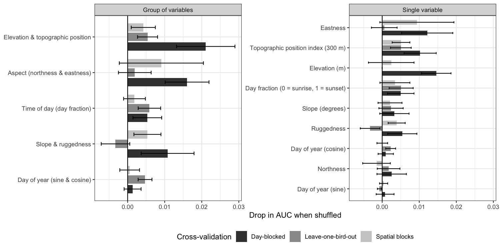
SHAP values
SHAP values split each bout’s prediction into a contribution from each variable (Lundberg & Lee 2017, A unified approach to interpreting model predictions).
For each bout, the prediction (on the log-odds scale) is the average prediction plus the sum of the SHAP values of all of the variables, so a SHAP value of 0.2 for slope means that the slope at that bout’s location raised its log-odds of soaring by 0.2 compared to the average. XGBoost calculates them exactly for tree models (TreeSHAP), so they are quick to calculate for every bout.
Unlike the permutation importance (one number per variable) and ALE (the average effect), SHAP values show the effect of each variable for every bout, so we can see whether the effect of a variable depends on the values of other variables (e.g. the time of day).
Two caveats. SHAP values are calculated with the final model on the training data, so (like XGBoost’s built-in importance) they describe how the model uses each variable, not how well it predicts new data. And with correlated predictors, the credit can still be shared between them, so we also sum the SHAP values of each group of predictors (SHAP values add up, so the SHAP value of a group is the sum of the SHAP values of its variables).
Show code
# SHAP values of every bout (one column per variable, plus the intercept, which
# is the same for every bout)
bout_matrix <- as.matrix(model_data[predictors])
shap_matrix <- predict(final_model, bout_matrix, predcontrib = TRUE)
# check - the intercept plus the SHAP values of each bout should equal the
# model's prediction on the log-odds scale (the largest difference should be ~0)
max(abs(rowSums(shap_matrix) - predict(final_model, bout_matrix, outputmargin = TRUE)))[1] 8.884817e-07Show code
# one row for each bout and variable, with the value of the variable and its SHAP value
shap_long <- as_tibble(shap_matrix[, predictors]) %>%
mutate(row = row_number()) %>%
pivot_longer(-row, names_to = "variable", values_to = "shap") %>%
left_join(model_data %>%
select(all_of(predictors)) %>%
mutate(row = row_number()) %>%
pivot_longer(-row, names_to = "variable", values_to = "value"),
by = c("row", "variable"))SHAP importance
The mean absolute SHAP value of each variable and each group of variables - the average size of its effect on the log-odds of soaring.
Show code
shap_importance <- bind_rows(
# each variable on its own
shap_long %>%
group_by(set = variable) %>%
summarise(mean_abs_shap = mean(abs(shap))) %>%
mutate(type = "Single variable"),
# each group of variables (the sum of the SHAP values of the variables in the group)
imap(predictor_groups, \(vars, g) {
tibble(set = g, mean_abs_shap = mean(abs(rowSums(shap_matrix[, vars, drop = FALSE]))))
}) %>%
bind_rows() %>%
mutate(type = "Group of variables")
)
shap_importance %>%
mutate(label = c(group_labels, variable_labels)[set],
type = factor(type, levels = c("Group of variables", "Single variable"))) %>%
ggplot(aes(x = mean_abs_shap, y = reorder(label, mean_abs_shap))) +
geom_col(fill = "grey50") +
facet_wrap(~ type, scales = "free_y") +
labs(x = "Mean absolute SHAP value (log-odds of soaring)", y = NULL) +
theme_bw()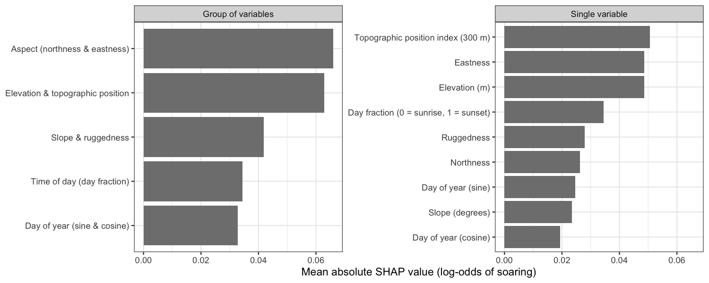
SHAP summary plot
Each point is one bout, placed by its SHAP value for that variable, and coloured by the value of the variable (from the lowest to the highest value in the data). The variables are ordered by their mean absolute SHAP value. For example, if the high values (yellow) are on the right, higher values of that variable increase the probability of soaring.
Show code
# the order of the variables (most important at the top)
variable_order <- shap_importance %>%
filter(type == "Single variable") %>%
arrange(mean_abs_shap) %>%
pull(set)
set.seed(seed)
shap_long %>%
# the value of each variable as a percentile (0 = lowest, 1 = highest)
group_by(variable) %>%
mutate(value_rank = percent_rank(value)) %>%
ungroup() %>%
mutate(variable = factor(variable, levels = variable_order,
labels = variable_labels[variable_order])) %>%
ggplot(aes(x = shap, y = variable, colour = value_rank)) +
geom_vline(xintercept = 0, colour = "grey50") +
geom_jitter(width = 0, height = 0.3, size = 0.3, alpha = 0.3) +
scale_colour_viridis_c(option = "plasma", breaks = c(0, 1), labels = c("Low", "High")) +
labs(x = "SHAP value (effect on the log-odds of soaring)", y = NULL,
colour = "Value of\nthe variable") +
theme_bw()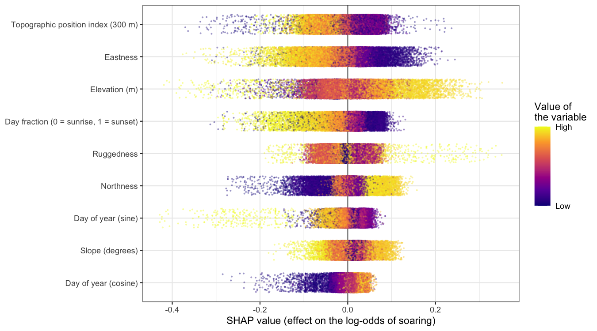
Effects of the time variables
The SHAP values of the day fraction, and of the day of year (the sum of the SHAP values of its sine and cosine, plotted against the day of year). Each point is a bout and the line is a smooth through them. The spread of the points at the same value shows how much the effect depends on the other variables.
Show code
tibble(
`Day fraction (0 = sunrise, 1 = sunset)` = model_data$day_fraction,
`Day of the year` = model_data$yday,
shap_day_fraction = shap_matrix[, "day_fraction"],
shap_season = shap_matrix[, "yday_sin"] + shap_matrix[, "yday_cos"]
) %>%
pivot_longer(c(`Day fraction (0 = sunrise, 1 = sunset)`, `Day of the year`),
names_to = "variable", values_to = "value") %>%
mutate(shap = if_else(variable == "Day of the year", shap_season, shap_day_fraction)) %>%
ggplot(aes(x = value, y = shap)) +
geom_hline(yintercept = 0, linetype = "dashed", colour = "grey50") +
geom_point(size = 0.5, alpha = 0.1) +
geom_smooth(se = FALSE, colour = behaviour_colours[["soaring"]]) +
facet_wrap(~ variable, scales = "free_x") +
labs(x = NULL, y = "SHAP value (effect on the log-odds of soaring)") +
theme_bw()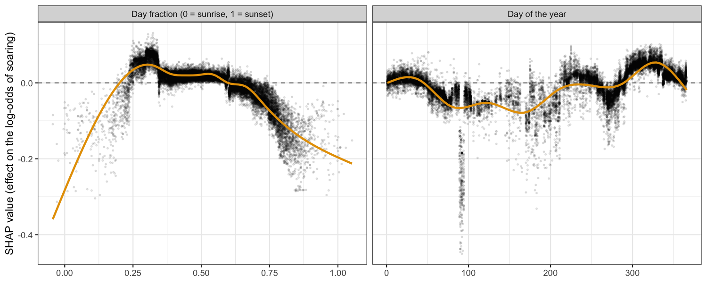
Do the landscape effects change with time?
SHAP dependence plots for the three landscape variables with the largest mean absolute SHAP values. Each point is a bout, placed by the value of the variable and its SHAP value, and coloured by the time of day (top) or the time of year (bottom, using the cosine of the day of year, from mid-winter to mid-summer). If the effect of the landscape changes with the time (an interaction), the colours will separate vertically - e.g. if steep slopes only raised the probability of soaring in the afternoon, the afternoon bouts would be higher than the morning bouts at steep slopes.
Show code
# the three most important landscape variables (by mean absolute SHAP value)
top_landscape_vars <- shap_importance %>%
filter(type == "Single variable", set %in% landscape_vars) %>%
slice_max(mean_abs_shap, n = 3) %>%
pull(set)
# SHAP values of these variables, with the time variables of each bout
dependence_data <- shap_long %>%
filter(variable %in% top_landscape_vars) %>%
left_join(model_data %>% mutate(row = row_number()) %>% select(row, day_fraction, yday_cos),
by = "row") %>%
mutate(variable = factor(variable_labels[variable], levels = variable_labels[top_landscape_vars]))
dependence_data %>%
# plot in a random order, so no time of day is always on top
slice_sample(prop = 1) %>%
ggplot(aes(x = value, y = shap, colour = day_fraction)) +
geom_hline(yintercept = 0, linetype = "dashed", colour = "grey50") +
geom_point(size = 0.6, alpha = 0.5) +
facet_wrap(~ variable, scales = "free_x") +
scale_colour_viridis_c(option = "plasma") +
labs(x = NULL, y = "SHAP value (log-odds of soaring)", colour = "Day\nfraction") +
theme_bw()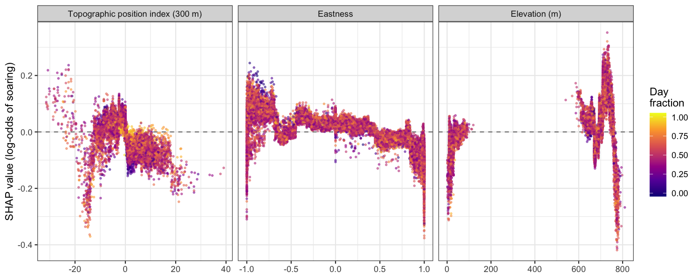
Show code
dependence_data %>%
slice_sample(prop = 1) %>%
ggplot(aes(x = value, y = shap, colour = yday_cos)) +
geom_hline(yintercept = 0, linetype = "dashed", colour = "grey50") +
geom_point(size = 0.6, alpha = 0.5) +
facet_wrap(~ variable, scales = "free_x") +
scale_colour_distiller(palette = "RdBu", direction = -1, limits = c(-1, 1),
breaks = c(-1, 0, 1),
labels = c("Mid-winter", "Autumn/spring", "Mid-summer")) +
labs(x = NULL, y = "SHAP value (log-odds of soaring)", colour = "Time of year") +
theme_bw()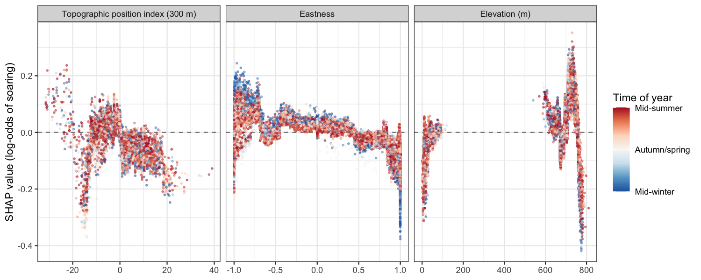
SHAP interaction values
XGBoost can also split each SHAP value into a main effect and the interactions with each of the other variables (SHAP interaction values). The heat map shows the mean absolute interaction value for each pair of variables (the main effects, on the diagonal, are left out). A larger value means the model’s prediction depends more on that combination of variables, beyond their separate effects. The interactions between the time variables and the landscape variables are the ones that show whether the eagles use the landscape differently at different times.
The interaction values take longer to calculate, so we use a random sample of up to 2500 soaring and 2500 flapping bouts.
Show code
# a random sample of bouts, with the same number of each behaviour
set.seed(seed)
interaction_sample <- model_data %>%
group_by(behaviour) %>%
slice_sample(n = 2500) %>%
ungroup()
# SHAP interaction values - an array with one row for each bout, and one
# column and layer for each variable (plus the intercept)
shap_interactions <- predict(final_model, as.matrix(interaction_sample[predictors]),
predinteraction = TRUE)
# mean absolute interaction value for each pair of variables
interaction_strength <- apply(abs(shap_interactions[, predictors, predictors]), c(2, 3), mean)
interaction_table <- interaction_strength %>%
as_tibble(rownames = "variable_1") %>%
pivot_longer(-variable_1, names_to = "variable_2", values_to = "interaction") %>%
mutate(type = case_when(variable_1 == variable_2 ~ "main effect",
variable_1 %in% time_vars & variable_2 %in% time_vars ~ "time x time",
variable_1 %in% landscape_vars & variable_2 %in% landscape_vars ~ "landscape x landscape",
TRUE ~ "time x landscape"))
interaction_table %>%
# leave out the main effects
mutate(interaction = if_else(type == "main effect", NA, interaction),
across(c(variable_1, variable_2), \(x) factor(x, levels = predictors))) %>%
ggplot(aes(x = variable_1, y = variable_2, fill = interaction)) +
geom_tile() +
# label the interactions (not the empty main effect cells)
geom_text(data = \(d) filter(d, !is.na(interaction)),
aes(label = round(interaction, 3)), size = 2.8) +
scale_fill_viridis_c(na.value = "grey90") +
labs(x = NULL, y = NULL, fill = "Mean absolute\ninteraction\nvalue") +
theme_bw() +
theme(axis.text.x = element_text(angle = 45, hjust = 1))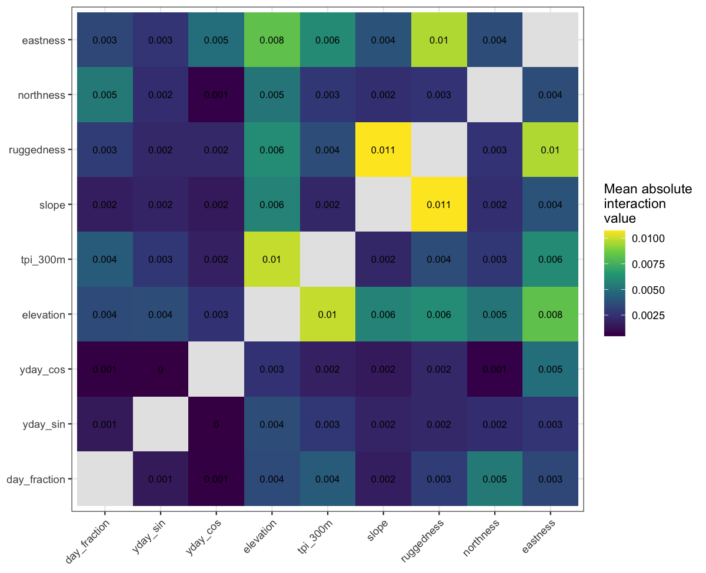
Show code
Accumulated local effects
The same accumulated local effects (ALE) plots as for the random forest (Apley and Zhu 2020), which show how the predicted probability of soaring changes with each variable (on the probability scale, centred so that the average effect is 0). These are directly comparable to the random forest’s ALE plots. The rug at the bottom of each panel shows the values in the data (a random sample of 1000 bouts).
Show code
# iml needs the model, the predictor data and a function that returns the
# predicted probability of soaring
xgb_predictor <- Predictor$new(model = final_model,
data = model_data %>% select(all_of(predictors)) %>% as.data.frame(),
predict.function = \(model, newdata) predict_soaring(model, newdata))
ale_vars <- c("day_fraction", landscape_vars)
ale_results <- map(ale_vars, \(v) {
FeatureEffect$new(xgb_predictor, feature = v, method = "ale", grid.size = 40)$results %>%
rename(value = all_of(v), ale = .value) %>%
mutate(variable = v)
}) %>%
bind_rows()
# a sample of the data for the rug
set.seed(seed)
rug_data <- model_data %>%
slice_sample(n = min(1000, nrow(model_data))) %>%
select(all_of(ale_vars)) %>%
pivot_longer(everything(), names_to = "variable")
bind_rows(ale = ale_results, rug = rug_data, .id = "data") %>%
mutate(variable = factor(variable_labels[variable], levels = variable_labels)) %>%
ggplot(aes(x = value)) +
geom_hline(yintercept = 0, linetype = "dashed", colour = "grey50") +
geom_line(data = \(d) filter(d, data == "ale"), aes(y = ale),
colour = behaviour_colours[["soaring"]], linewidth = 1) +
geom_rug(data = \(d) filter(d, data == "rug"), alpha = 0.2, length = unit(0.03, "npc")) +
facet_wrap(~ variable, scales = "free_x") +
labs(x = NULL, y = "Effect on the probability of soaring (ALE)") +
theme_bw()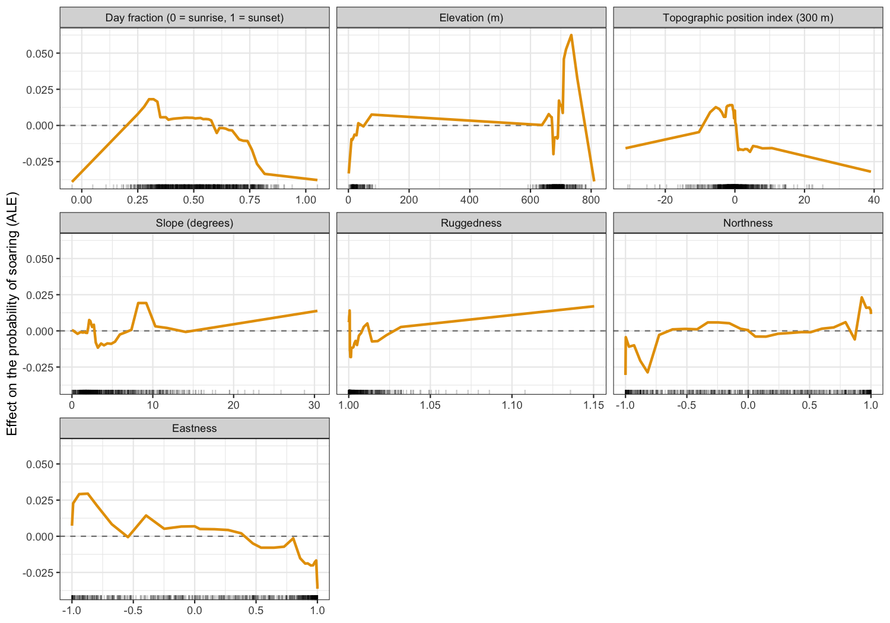
Time of day through the year
The average predicted probability of soaring for each day fraction and day of the year, from moving a random sample of bouts to each combination (averaged over the landscape variables of the sampled bouts), the same as for the random forest. The day fractions are limited to the range in the data.
Show code
# a random sample of bouts to average over
set.seed(seed)
bout_sample <- model_data %>% slice_sample(n = min(400, nrow(model_data)))
# every combination of day fraction (every 0.025, within the range of the data)
# and day of year (every week)
time_grid <- expand_grid(day_fraction = seq(floor(min(model_data$day_fraction) * 40) / 40,
ceiling(max(model_data$day_fraction) * 40) / 40,
by = 0.025),
yday = seq(1, 365, by = 7))
# every sampled bout at every combination of day fraction and day of year
time_effect <- bout_sample %>%
select(bout_id, all_of(landscape_vars)) %>%
cross_join(time_grid) %>%
mutate(yday_sin = sin(2 * pi * yday / 365.25),
yday_cos = cos(2 * pi * yday / 365.25))
time_effect$prob <- predict_soaring(final_model, time_effect)
time_effect %>%
group_by(day_fraction, yday) %>%
summarise(prob = mean(prob), .groups = "drop") %>%
ggplot() +
geom_raster(aes(x = yday, y = day_fraction, fill = prob)) +
# solar noon is (very close to) halfway between sunrise and sunset
geom_hline(yintercept = 0.5, colour = "white", linetype = "dashed") +
scale_fill_viridis_c() +
scale_x_continuous(breaks = yday(make_date(2021, 1:12, 1)), labels = month.abb,
expand = c(0, 0)) +
scale_y_continuous(breaks = seq(0, 1, by = 0.1), expand = c(0, 0)) +
labs(x = "Day of the year", y = "Day fraction (0 = sunrise, 1 = sunset)",
fill = "Probability\nof soaring") +
theme_bw()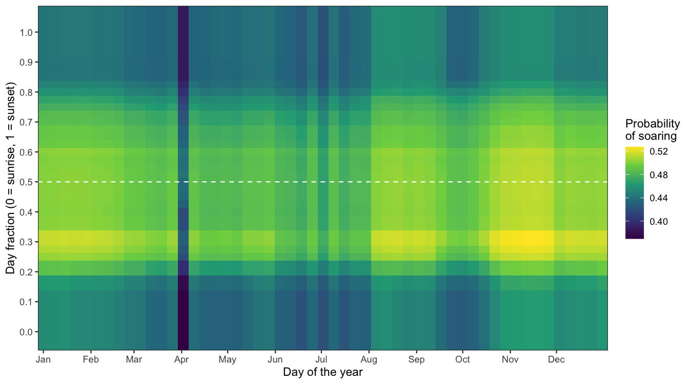
Prediction maps
The same maps as for the random forest - the final model is predicted to every 30 m cell in the area around the bouts of map_eagle, in the middle of summer (15 January) and winter (15 July), at day fractions of 0.25, 0.5 and 0.75.
These maps show the relative suitability for soaring, not the probability that an eagle soars there - a high value means that if the eagle is flying there at that time, it is more likely to be soaring than flapping. Cells where any landscape variable is outside the range of the bouts used to fit the model are masked (grey).
Prediction data
Show code
# project each layer to the elevation grid (nearest neighbour keeps the values the same)
prediction_stack <- map(names(spatial_layers), \(layer) {
r <- spatial_layers[[layer]]
if (layer != "elevation") r <- project(r, spatial_layers$elevation, method = "near")
names(r) <- layer
r
}) %>%
rast()
# northness and eastness from aspect (flat cells, with an aspect of -1, are 0)
prediction_stack$northness <- ifel(prediction_stack$aspect == -1, 0, cos(prediction_stack$aspect * pi / 180))
prediction_stack$eastness <- ifel(prediction_stack$aspect == -1, 0, sin(prediction_stack$aspect * pi / 180))
# one row for each cell with all of the landscape variables (i.e. on land).
# (when these are plotted with geom_raster, ggplot warns that the pixels are at
# 'uneven intervals' - this is because some rows of cells are all sea, and can be
# ignored, as the cells are still on a regular 30 m grid)
grid_df <- as.data.frame(prediction_stack[[landscape_vars]], xy = TRUE, cells = TRUE, na.rm = TRUE)
# cells where every landscape variable is within the range of the model data
grid_df$in_range <- TRUE
for (v in landscape_vars) {
grid_df$in_range <- grid_df$in_range &
grid_df[[v]] >= min(model_data[[v]]) & grid_df[[v]] <= max(model_data[[v]])
}
# the days of the year and day fractions to predict for
scenario_ydays <- c(15, 196)
scenario_day_fractions <- c(0.25, 0.5, 0.75)
# sunrise and sunset (local time) on each scenario day at the centre of the
# study area - only used to show the clock times of each scenario
scenario_sun_times <- getSunlightTimes(date = make_date(2021, 1, 1) + scenario_ydays - 1,
lat = mean(map_eagle_bouts$lat), lon = mean(map_eagle_bouts$lon),
keep = c("sunrise", "sunset"), tz = local_tz) %>%
as_tibble() %>%
mutate(yday = yday(date)) %>%
select(yday, sunrise, sunset)
scenarios <- expand_grid(yday = scenario_ydays, day_fraction = scenario_day_fractions) %>%
left_join(scenario_sun_times, by = "yday") %>%
mutate(season = if_else(yday == 15, "Summer (15 January)", "Winter (15 July)"),
time = factor(paste("Day fraction", day_fraction),
levels = paste("Day fraction", scenario_day_fractions)),
# the local clock time of this day fraction
clock_time = format(sunrise + day_fraction * (sunset - sunrise), "%H:%M"),
# a short name for each scenario (for the raster layers)
name = paste0("yday", yday, "_dayfrac", day_fraction))
scenarios %>% select(season, time, clock_time)Predict
Show code
scenario_predictions <- map(1:nrow(scenarios), \(i) {
# the landscape of every cell, with the time variables of this scenario
newdata <- grid_df %>%
mutate(day_fraction = scenarios$day_fraction[i],
yday_sin = sin(2 * pi * scenarios$yday[i] / 365.25),
yday_cos = cos(2 * pi * scenarios$yday[i] / 365.25))
grid_df %>%
select(cell, x, y, in_range) %>%
mutate(prob = predict_soaring(final_model, newdata),
name = scenarios$name[i],
season = scenarios$season[i],
time = scenarios$time[i])
}) %>%
bind_rows()
scenario_predictions %>%
# mask the cells outside the range of the data
mutate(prob = if_else(in_range, prob, NA)) %>%
ggplot() +
geom_raster(aes(x = x, y = y, fill = prob)) +
facet_grid(season ~ time) +
# the colour scale covers the range of the predictions (the same for every map)
scale_fill_viridis_c(na.value = "grey70") +
coord_equal() +
labs(x = NULL, y = NULL, fill = "Relative\nsoaring\nsuitability") +
theme_bw() +
theme(axis.text = element_blank(), axis.ticks = element_blank())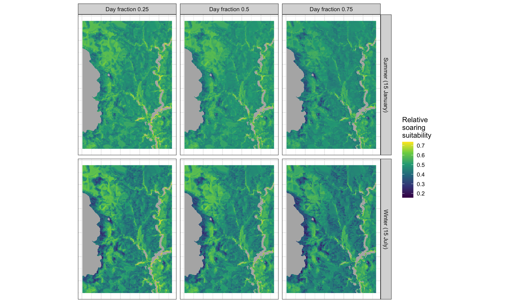
Uncertainty
The standard deviation of the predictions from the five full models fitted in the spatial cross-validation folds, halfway through the day (day fraction 0.5) in summer and winter. A high standard deviation shows where the predictions depend on which areas were in the training data.
Show code
noon_scenarios <- scenarios %>% filter(day_fraction == 0.5)
uncertainty <- map(1:nrow(noon_scenarios), \(i) {
newdata <- grid_df %>%
mutate(day_fraction = noon_scenarios$day_fraction[i],
yday_sin = sin(2 * pi * noon_scenarios$yday[i] / 365.25),
yday_cos = cos(2 * pi * noon_scenarios$yday[i] / 365.25))
# predictions of each spatial fold model (one column per model)
fold_predictions <- map(fold_models$spatial, \(fit) predict_soaring(fit, newdata)) %>%
bind_cols()
grid_df %>%
select(cell, x, y, in_range) %>%
mutate(sd = apply(fold_predictions, 1, sd),
name = paste0(noon_scenarios$name[i], "_sd"),
season = noon_scenarios$season[i])
}) %>%
bind_rows()
uncertainty %>%
mutate(sd = if_else(in_range, sd, NA)) %>%
ggplot() +
geom_raster(aes(x = x, y = y, fill = sd)) +
facet_wrap(~ season) +
scale_fill_viridis_c(option = "magma", na.value = "grey70") +
coord_equal() +
labs(x = NULL, y = NULL, fill = "SD across\nspatial fold\nmodels") +
theme_bw() +
theme(axis.text = element_blank(), axis.ticks = element_blank())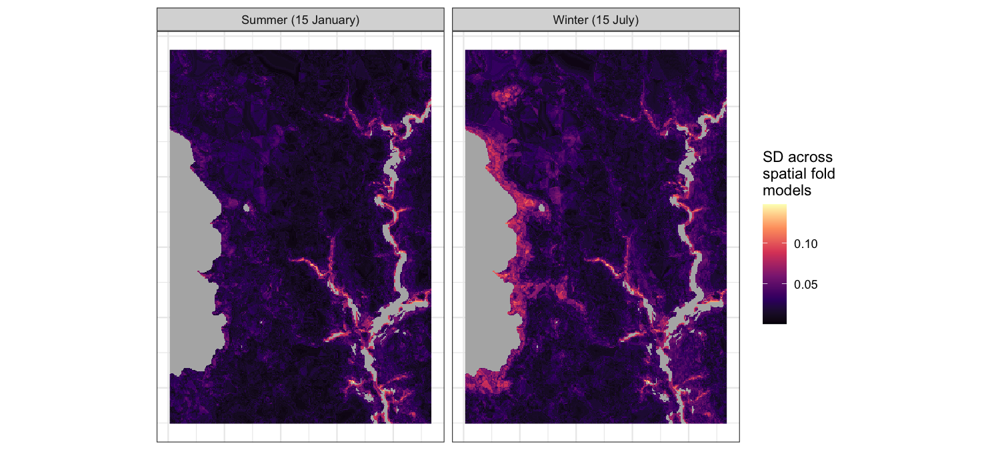
Save the outputs
Everything is saved in out_dir:
xgb_final_model.json- the final XGBoost model (read in withxgb.load())xgb_best_params.csv,xgb_nrounds.csvandxgb_tuning_results.csv- the tuned settings, the number of rounds for each model, and all of the settings that were triedxgb_oof_predictions.csv- the out-of-fold predictions of each model for each bout and cross-validation schemexgb_cv_results.csv- the cross-validation metrics (the results table above)xgb_permutation_importance.csv- the drop in AUC for each variable and group, in each foldxgb_shap_values.csv- the SHAP values of each bout (with itsbout_id)xgb_soaring_suitability.tif- the prediction maps (one layer per time scenario, with the cells outside the range of the data masked) andxgb_soaring_suitability_sd.tif- the standard deviation across the spatial fold models halfway through the day
[1] TRUEShow code
write_csv(best_params, file.path(out_dir, "xgb_best_params.csv"))
write_csv(enframe(model_nrounds, name = "model", value = "nrounds"),
file.path(out_dir, "xgb_nrounds.csv"))
write_csv(tuning_results, file.path(out_dir, "xgb_tuning_results.csv"))
write_csv(oof_predictions, file.path(out_dir, "xgb_oof_predictions.csv"))
write_csv(cv_results, file.path(out_dir, "xgb_cv_results.csv"))
write_csv(importance_results, file.path(out_dir, "xgb_permutation_importance.csv"))
write_csv(bind_cols(bout_id = model_data$bout_id, as_tibble(shap_matrix)),
file.path(out_dir, "xgb_shap_values.csv"))
# rasters on the same grid as the elevation layer, with one layer per scenario
predictions_to_raster <- function(predictions, value_col) {
layers <- map(unique(predictions$name), \(n) {
r <- rast(spatial_layers$elevation)
d <- predictions %>% filter(name == n, in_range)
r[d$cell] <- d[[value_col]]
names(r) <- n
r
})
rast(layers)
}
suitability_raster <- predictions_to_raster(scenario_predictions, "prob")
uncertainty_raster <- predictions_to_raster(uncertainty, "sd")
writeRaster(suitability_raster, file.path(out_dir, "xgb_soaring_suitability.tif"), overwrite = TRUE)
writeRaster(uncertainty_raster, file.path(out_dir, "xgb_soaring_suitability_sd.tif"), overwrite = TRUE)
suitability_rasterclass : SpatRaster
size : 443, 310, 6 (nrow, ncol, nlyr)
resolution : 30, 30 (x, y)
extent : 446055, 455355, 5318725, 5332015 (xmin, xmax, ymin, ymax)
coord. ref. : GDA94 / MGA zone 55 (EPSG:28355)
source(s) : memory
varnames : HS_DEM
HS_DEM
HS_DEM
HS_DEM
HS_DEM
...
names : yday1~c0.25, yday1~ac0.5, yday1~c0.75, yday1~c0.25, yday1~ac0.5, yday1~c0.75
min values : 0.287293, 0.283553, 0.231509, 0.187718, 0.19027, 0.156066
max values : 0.737988, 0.712453, 0.702508, 0.734142, 0.707145, 0.691693Summary of the results
These notes describe the results for Tabatha and Stella together when this script was written (November 2026). The numbers are filled in when the script is run, but the interpretation will need checking if the data change (e.g. when more eagles are added).
Show code
# AUC of a model (from the pooled out-of-fold predictions) for the text below
auc_of <- function(results, s, m) {
if (is.null(results)) return(NA)
round(results$AUC[results$scheme == s & results$model == m], 3)
}
# the random forest results (if they exist)
rf_cv_results <- if (file.exists(rf_results_file)) read_csv(rf_results_file, show_col_types = FALSE) else NULL
# the share of the SHAP interaction values from each type of effect (%)
interaction_share <- interaction_table %>%
group_by(type) %>%
summarise(total = sum(interaction)) %>%
mutate(percent = round(100 * total / sum(total)))
share_of <- function(t) interaction_share$percent[interaction_share$type == t]- XGBoost performs about the same as the random forest. The full model has an AUC of 0.542 for new days (random forest 0.542), 0.521 for new areas (random forest 0.513) and 0.512 for a new eagle (random forest 0.507), so neither method predicts new areas or the other eagle much better than chance. The fold-by-fold comparison shows that the two methods have similar AUCs for most of the day-blocked and spatial folds. This suggests that the limit is the information in the predictors, rather than the method.
- The tuning made little difference. Many combinations of settings had almost the same held-out log loss. Early stopping chose 194 rounds for the full model (with a maximum tree depth of 3), and the learning curves show that the training performance keeps improving after this while the held-out performance levels off at an AUC of about 0.54.
- As for the random forest, what skill there is comes from the landscape, and it doesn’t transfer between the eagles. The landscape-only model is as good as the full model for new days (AUC 0.537), and the time-only model is close to chance (0.511). For a new eagle, the landscape-only model is close to chance too (0.507). The most important groups of variables (permutation importance) for new days are elevation & topographic position, aspect, and slope & ruggedness, while aspect is the most important for new areas. The variables with the largest SHAP values are the topographic position index, eastness and elevation.
- The directions of the effects match the random forest. Soaring is more likely at locations that are lower than their surroundings (negative TPI), over west-facing and north-facing slopes, and in Tabatha’s range at about 700 to 750 m. It is less likely at locations that are higher than their surroundings, over east-facing slopes, above about 750 m, and at the lowest elevations near the coast (below about 10 m, in Stella’s range).
- The time variables have small effects. Soaring is relatively less likely just after sunrise and in the last quarter of the day, and a little less likely in autumn and winter (around April to July) than in late spring (November), but these shifts are too small for the time-only model to separate soaring from flapping.
- There is little evidence that the landscape effects change with the time. The interactions between the time and landscape variables make up 19% of the SHAP interaction values (the main effects make up 50%, and the interactions among the landscape variables 31%), and the SHAP dependence plots mostly don’t separate by the time of day or year (apart from a hint that west-facing slopes are used for soaring more in winter than in summer). This agrees with the random forest’s ALE curves for subsets of the bouts.
The suggestions for improving the models at the end of the random forest script (multi-scale and path-averaged landscape variables, wind, land cover, a better DEM for Stella’s area, and more eagles) apply equally here.
References
Session Information
R version 4.5.0 (2025-04-11)
Platform: aarch64-apple-darwin20
Running under: macOS 26.6.2
Matrix products: default
BLAS: /Library/Frameworks/R.framework/Versions/4.5-arm64/Resources/lib/libRblas.0.dylib
LAPACK: /Library/Frameworks/R.framework/Versions/4.5-arm64/Resources/lib/libRlapack.dylib; LAPACK version 3.12.1
locale:
[1] en_AU/en_AU/en_AU/C/en_AU/en_AU
time zone: Europe/London
tzcode source: internal
attached base packages:
[1] stats graphics grDevices utils datasets methods base
other attached packages:
[1] suncalc_0.5.1 iml_0.11.4 pROC_1.18.5 blockCV_3.1-5
[5] xgboost_3.2.1.1 sf_1.1-2 tidyterra_0.7.2 terra_1.9-34
[9] lubridate_1.9.5 forcats_1.0.0 stringr_1.6.0 dplyr_1.2.1
[13] purrr_1.2.2 readr_2.1.5 tidyr_1.3.1 tibble_3.3.1
[17] ggplot2_4.0.3 tidyverse_2.0.0
loaded via a namespace (and not attached):
[1] gtable_0.3.6 xfun_0.57 htmlwidgets_1.6.4 lattice_0.22-6
[5] tzdb_0.5.0 vctrs_0.7.3 tools_4.5.0 generics_0.1.4
[9] parallel_4.5.0 proxy_0.4-29 pkgconfig_2.0.3 Matrix_1.7-3
[13] KernSmooth_2.23-26 data.table_1.17.0 checkmate_2.3.2 RColorBrewer_1.1-3
[17] S7_0.2.2 lifecycle_1.0.5 compiler_4.5.0 farver_2.1.2
[21] codetools_0.2-20 htmltools_0.5.8.1 class_7.3-23 yaml_2.3.12
[25] Formula_1.2-5 crayon_1.5.3 pillar_1.11.1 classInt_0.4-11
[29] nlme_3.1-168 parallelly_1.44.0 Metrics_0.1.4 tidyselect_1.2.1
[33] digest_0.6.37 stringi_1.8.9 future_1.49.0 listenv_0.9.1
[37] splines_4.5.0 labeling_0.4.3 fastmap_1.2.0 grid_4.5.0
[41] cli_3.6.6 magrittr_2.0.5 utf8_1.2.6 dichromat_2.0-0.1
[45] e1071_1.7-17 withr_3.0.3 scales_1.4.0 backports_1.5.0
[49] bit64_4.8.4 timechange_0.4.0 rmarkdown_2.29 globals_0.18.0
[53] bit_4.6.0 hms_1.1.4 evaluate_1.0.5 knitr_1.51
[57] viridisLite_0.4.3 mgcv_1.9-4 rlang_1.3.0 Rcpp_1.1.2
[61] glue_1.8.1 DBI_1.3.0 vroom_1.7.1 jsonlite_2.0.0
[65] R6_2.6.1 plyr_1.8.9 units_1.0-1